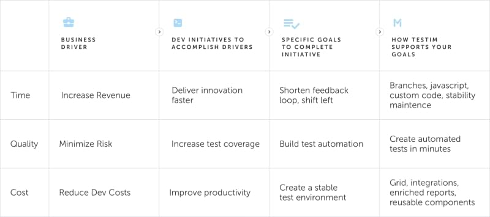

Why should you invest in test automation?
Automated testing tools are designed to support the software delivery process in an iterative manner, continuously collecting feedback. The feedback will, in turn, make developers more quality-conscious and encourage such practices as static code analysis and code reviews, enabling CI/CD. The ultimate goal is shipping high quality code, quickly to create exceptional user experiences!
A test automation platform is designed to speedup the testing process. The benefits of a robust test automation platform includes:

Test automation allows teams to author and execute tests, reuse test data, and report on status and quality.
Below is a 5-step process to help you identify the best test automation platform that not only solves your challenges today but gives you flexibility to change as your software development processes and tool stack evolve over time.
- Identify your needs and challenges
- What to look for in a vendor
- Cost considerations
- Determine the specific features that you need
- Prepare for launch
01 - Identify your needs and challenges
There are several overarching needs that all organizations face regardless of their unique challenges and budget restraints. Buyers of test automation tools typically fall under three fundamental situations:
Situation 1: Never implemented a test automation solution before
Many small and mid-sized organizations fall under this category. Most of them have limited or no QA support staff. Their needs can often be adequately met by on-demand, off-the-shelf test automation solutions that require minimal or no customization. Such systems typically require only basic integration with defect tracking tools and other solutions in the CI/CD stack.
Situation 2: Underperforming test automation solutions
Many mid-sized to large organizations fall under this category. Most have experience using open source or new unproven tools that have limited capabilities. They need a solution that can keep up with how they work and integrate with new best of breed tools in their stack.
- Growing need for integration with newer development tools
- Requires migration of some tests
- Requires more functionality and less maintenance of their tests
- Need to more reporting and visibility into status and quality
- Need grid/cross browser testing capabilities
Situation 3: Already own a big legacy ALM suite
Rapidly growing mid-sized businesses or large companies with complex development processes fall under this group. Such organizations often have globally distributed teams, sophisticated internal IT teams as well as well-established ALM suites which utilize a mix of methodologies and require advanced data and systems integration.
Define your business drivers
Once you determine your particular situation, the next step involves defining the exact business drivers that you are trying to resolve with a test automation platform. These include, but are not limited to, needs such as:
- Lower your software development/deployment costs
- Speed-up your time to market
- Achieve better integration and alignment with your development tool stack
- Reduce time to resolution
- Improve your overall test coverage and traceability
- Improve the quality of your software
- Foster communication and collaboration between your teams
Identify your challenges
The software industry is growing increasingly complex and applications are becoming more sophisticated. Further, there's added pressure to get your software to the market as soon as possible in a bid to stay ahead of the competition. These escalating needs have been driving the need for automated test solutions to help development teams to centralize, organize and prioritize their testing processes.
It's therefore imperative to identify the challenges that your test automation must address. You need to ask yourself questions like:
- Do you have diverse teams across the globe leading to impaired visibility and collaboration?
- Are these teams expected to synchronize multiple releases on tight schedules?
- Has your testing environment become too jumbled up with many operating systems and different configurations?
- Is your current test automation solution evolving fast enough to accommodate new systems and assets?
- Are your teams spending more time on test maintenance than actual testing?
02 - What to look for in a vendor
Once you have identified your needs and challenges, you are now ready to start vetting potential vendors. On the surface, many test automation solutions appear quite similar. A deeper look, however, reveals that different vendors offer varying levels of performance, support and cost-effectiveness. You should, therefore, look carefully under the hood to determine which test tools are the best fit for your objectives.
Here are the top criteria when evaluating vendors:
- Longevity - how long has the vendor been in business? Does the vendor have a good track record?
- Customer base - does the vendor offer industry-specific or catchall solutions? Does the vendor have good customer reviews? You can verify these through detailed references, case studies, testimonials and online reviews.
- Credibility - does the vendor have a credible and well-established brand?
- Support - does the vendor provide regular software updates? What other kind of customer success and support does the vendor provide?
- Training services - does the vendor provide any kind of training to help customers learn how to navigate their way around the platform?